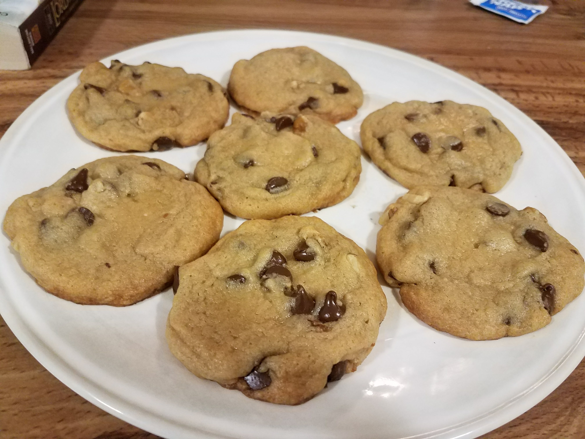
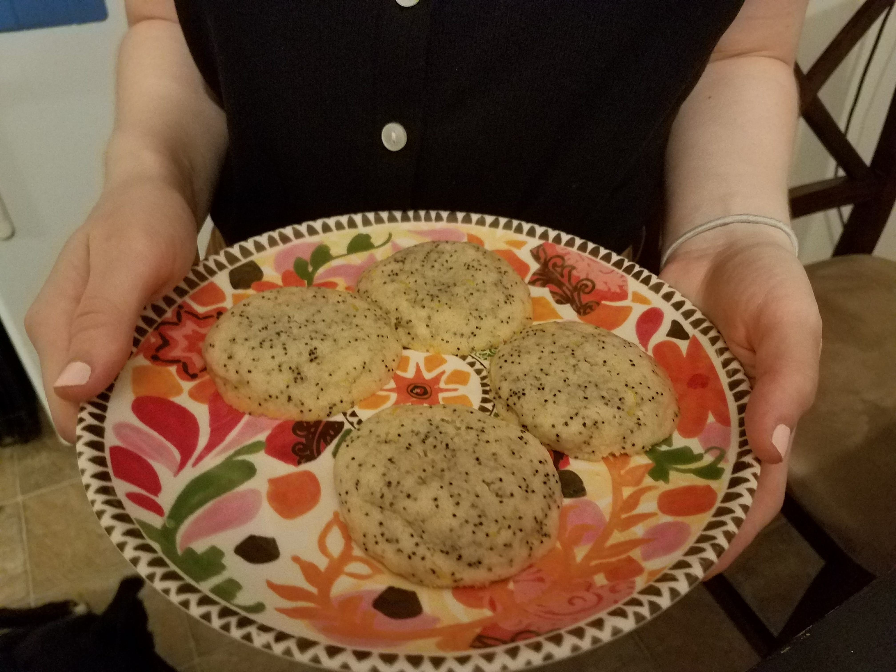
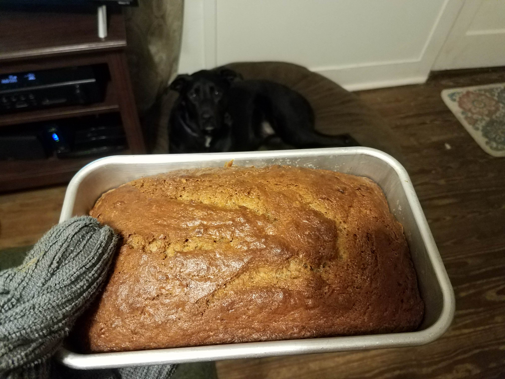
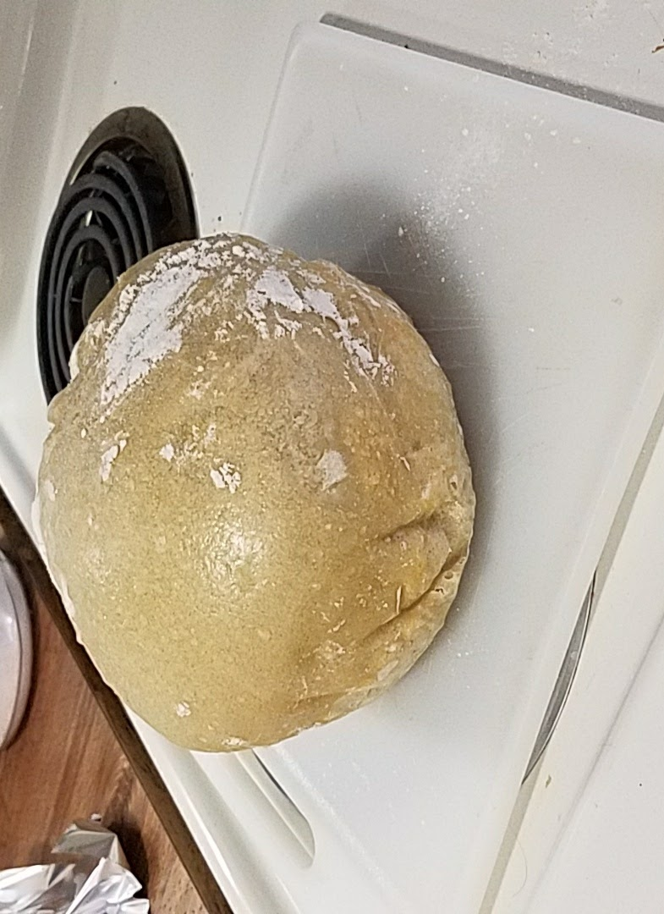

Summer's Small Batch Chocolate Chip Cookies

Servings: 8 cookies
Prep Time: 20 mins
Bake Time: 10 mins
INGREDIENTS
- 1/4 cup butter (unsalted, softened)
- 1/4 cup brown sugar
- 2 tablespoons white sugar
- 1 egg yolk
- 1/2 teaspoon vanilla
- 1/2 cup + 1 tablespoon flour
- 1/4 teaspoon baking soda
- 1/4 teaspoon salt
- 1/3 cup chocolate chip cookies
INSTRUCTIONS
- Preheat oven to 350 degrees.
- In bowl 1 - cream butter and sugars. Add egg yolk and vanilla.
- In bowl 2 - mix flour, baking soda, and salt.
- Mix dry ingredients into wet ingredients. Fold in chocolate chips.
- Chill in freezer for 10 minutes.
- Scoop dough into 8 balls.
- Bake in oven 10-12 minutes.
Summer's Lemon Poppy Seed Cookies

Servings: 3 dozen
Prep Time: 15 mins
Bake Time: 10 mins
INGREDIENTS
- 2 1/3 cups flour
- 1 teaspoon baking powder
- 1/2 teaspoon baking soda
- 1/2 teaspoon salt
- 1 cup butter (unsalted)
- 1 cup granulated sugar
- 1 egg
- Zest of 2 lemons
- 2 tablespoons lemon juice
- 2 teaspoons vanilla extract
- 2 teaspoons poppy seeds
INSTRUCTIONS
- Preheat oven to 350 degrees.
- In bowl 1 - mix flour, baking powder, baking soda, and salt.
- In bowl 2 - cream butter and sugar. Beat in egg, lemon, vanilla, and poppyseed.
- Slowly add dry mixture to wet mixture.
- Bake in oven 10-12 minutes.
- Optional icing: mix lemon juice with powdered sugar.
Quincy's Banana Bread

Servings: 1 loaf
Prep Time: 15 mins
Bake Time: 1 hour
INGREDIENTS
- 8 tablespoons butter (unsalted, softened)
- 1 cup white sugar
- 2 large eggs
- 3 ripe bananas
- 1 tablespoon milk
- 1 teaspoon ground cinnamon
- 2 cups all purpose flour
- 1 teaspoon baking powder
- 1 teaspoon baking soda
- 1 teaspoon salt
- 1 handful walnuts
INSTRUCTIONS
- Preheat oven to 325 degrees.
- In bowl 1 - cream butter and sugars. Add eggs one at a time.
- In bowl 2 - mash bananas. Mix in milk and cinnamon.
- In bowl 3 - mix together flour, baking powder, baking soda, and salt.
- Stir banana mixture into creamed mixture. Mix in walnuts.
- Slowly mix dry ingredients into wet until flour disappears.
- Bake in oven 1 hour to 1 hour and 10 minutes..
Danny's No-Knead Bread

Servings: 1 loaf
Prep Time: 5 mins + 1 day
Bake Time: 1 hour
INGREDIENTS
- 3 cups flour
- 1 1/2 cup water (room temp.)
- 1 1/2 teaspoon salt
- 1/2 teaspoon yeast
INSTRUCTIONS
- Whisk together dry ingredients. Stir in water.
- Cover bowl and let sit for 12-18 hours at room temperature.
- Start oven at 350 degrees. Heat dutch oven for 30 minutes.
- While waiting, flour the bread and let it sit out.
- Bake bread covered for 30 minutes. Bake uncovered for 15 minutes.